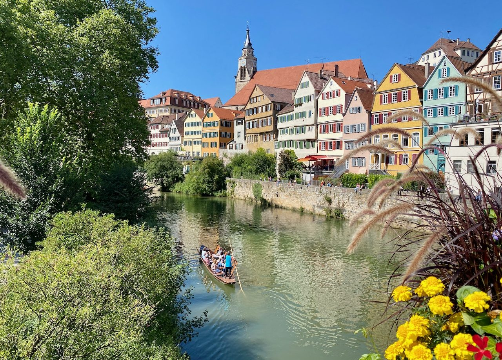
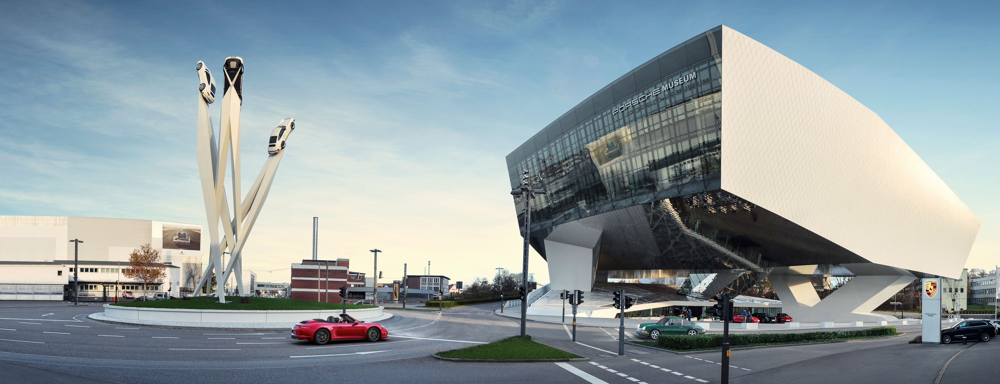
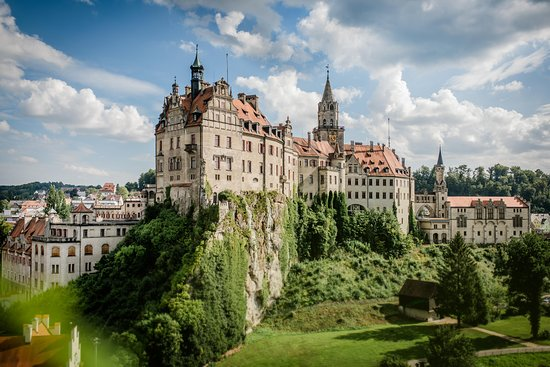
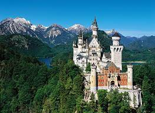

Ulm

Tuebingen

Stuttgart


Porsche Museum
Schloss Sigmaringen

Schloss Neuschwanstein

The ULTIMATE Disney Castle!
Neuschwanstein Castle is a 19th-century historicist palace on a rugged hill above the village of Hohenschwangau near Fuessen in southwest Bavaria, Germany. The palace was commissioned by King Ludwig II of Bavaria as a retreat and in honour of Richard Wagner.
Other places worth a visit
In Germany:
In Europe: